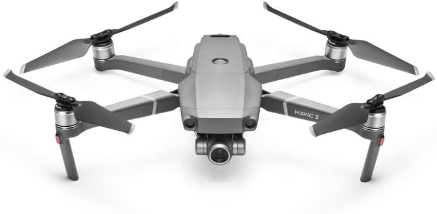
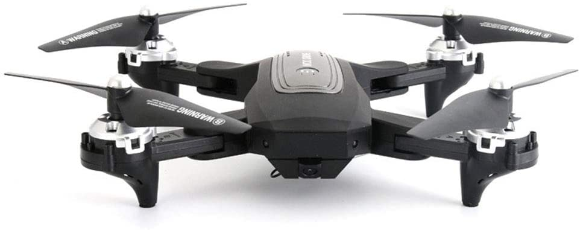
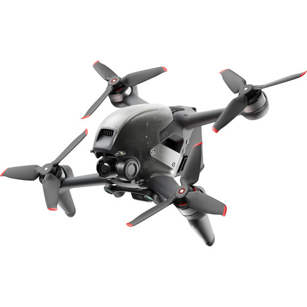
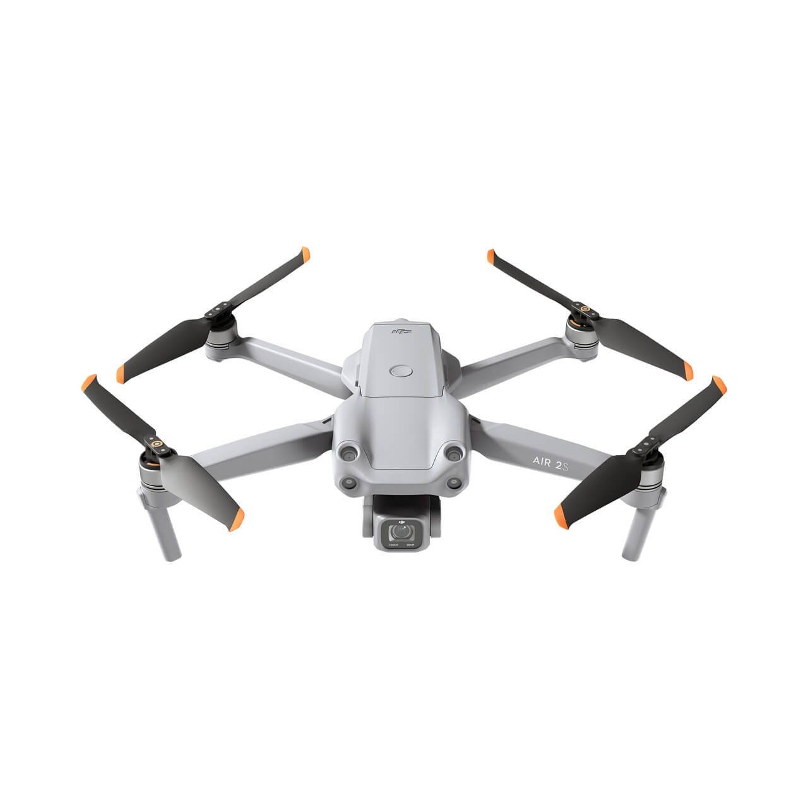

<!DOCTYPE htnl>
<htm>
    <head>
        <title>Dronai</title>
         <meta charset="UTF-8">
    </head>
    <body style="background-color: azure; text-align: center;">
    <h1 style="color:darkblue; text-align: center; background-color: azure;">Dronai</h1>
        <p style="text-align: justify">A drone, in technological terms, is an unmanned aircraft. ... Essentially, a drone is a flying robot that can be remotely controlled or fly autonomously through software-controlled flight plans in their embedded systems, working in conjunction with onboard sensors and GPS.</p>
    <h2 style="background-color: azure; color:blue;">DJI Mavic 2 Zoom</h2>
    
        <p style="text-align: justify">DJI Mavic 2 Zoom (UK) - Drone with Sensore of 1 / 2,3 "and 12 mp, Lens with 2 x Optical Zoom (24-48 mm), Full HD Video, Ultimate Flexibility, Distance of 8 km - Dark Grey</p>
        <h2 style="background-color: azure; color:blue;">ZYLEDW</h2>
        
        <p style="text-align: justify">ZYLEDW Drone Foldable Large Quadcopter With Adjustable Wide-Angle Camera, Follow Me, Altitude Hold, 30 Minutes Flight, Long Control RangeWith HD Camera And GPS</p>
        <h2 style="background-color: azure; color:blue;">DJI FPV</h2>
        
        <p style="background-color: azure; text-align: justify;">DJI FPV Drone. Using the bundled FPV Goggles V2, you get a first-person view of what the drone sees, with footage that makes it feel like you're the one flying through the sky. The onboard 4K60 fps gimbal camera can send low-latency video to your goggles for a near real-time experience. The 150° super-wide FOV lets you take in and appreciate the scope of the vistas you fly over.</p>
        <h2 style="background-color: azure; color:blue;">DJI Air 2S</h2>
        
        <p style="background-color: azure; text-align: justify;">DJI Air 2S 999 € 1-Inch CMOS Sensor 5.4K Video MasterShots 12km 1080p Transmission  Obstacle Sensing in 4 Directions</p>
        <P>2021 &copy; MyWeeb</P>
    
    
    </body>
</htm>